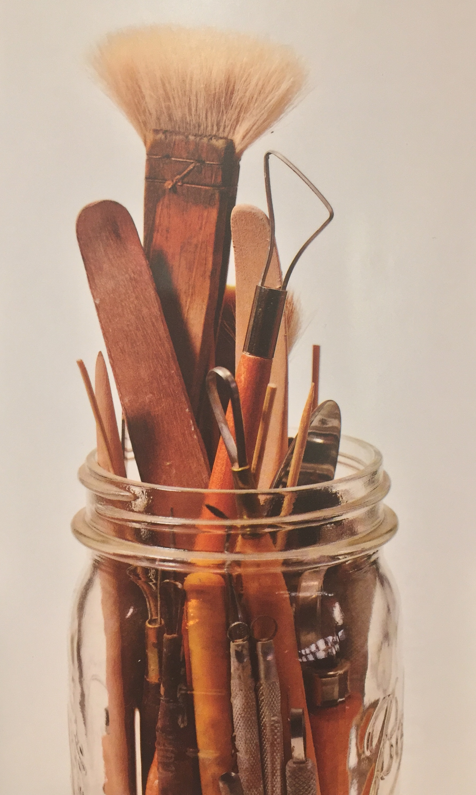
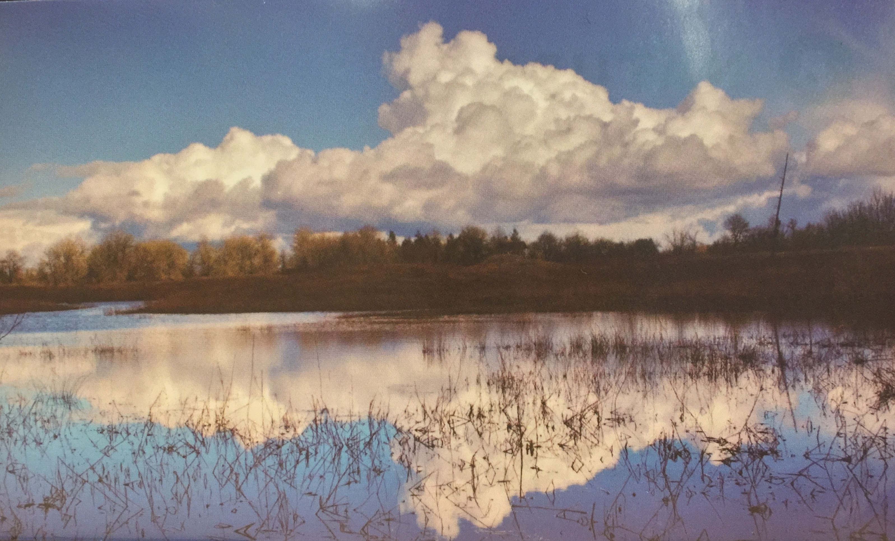

Last updated: October 10, 2018
Career Buddy: Michael Bovee (The MVP)
40% Tactile
35% Visual
25% Auditory
Hi my name is Chamisa. I own a company that creates access
for under served and high risk
populations to project-based
learning opportunities in STEM. Are you an educator
or know
anybody that might be interested in one of our courses?
(I changed the focus of my elevator pitch to something more immediately applicable)
Hi, my name is Chamisa. I'm an engineering student and recently
graduated from the CNM fullstack web development bootcamp. I'm
really interested in machine learning, AI and figuring out how the IoT
can be leveraged by underserved populations. Do you know someone
that might be interested in bringing in a fresh software developer/engineering student?
I am gathering the tools to manifest my inner vision.
 Front of the stove: Learn lots of code, get into grad school
Back of the stove: Get an apartment/car and plan a startup!
Non-profit: AISES; As a non-profit I think this could be a strategic option since this
academic society works with most universities and colleges in the United States. It would allow me the
opportunity to build relationships with professionals and learn what is possible in terms of funding for
graduate school after I'm done with Deep Dive.
For profit: Think Ubiquitous, LLC; I want to intern with a company that deals in
nerdy sciencey stuff. I especially loved that they work in all sorts of fields with all types of data.
If it were possible to pitch an idea to them as an internship project that directly affects tribes and
the environment, I definitely would. I am very intimidated by their internship test though..
Salary expectations and potential: Realistically, I expect to use this bootcamp to get
an internship. With an internship, I will probably be working part-time, hourly for the next semester.
Ideally, I will have a schedule that allows for $15/hr, 20-30 hours per week. After I gain enough skill
I will want to move onto a more flexible, remote position that allows me to go to graduate school.
As I build my portfolio, I will expect to charge per project. In a freelance role, I would expect
to make somewhere around 32,000/yr, which evens out to about $15/hr.
| Identity | Channel | Content |
|---|---|---|
| Chamisa Edmo | Youtube | Math videos from previous semester |
| Chamisa Edmo | Professional, only social media account | |
| Storytelling Bot | IVOW Vimeo | IVOW conceptual video |
This week has been challenging since we have definitely hit the ground running. This week we've worked
heavily on quickly putting together simple html websites and deploying them on the server. Since I am definitely
still learning, this website is an example of how I may not be doing the correct thing in deployment. We
just finished up listening to Chloe talk about asking questions and maintaining a growth mindset, so I'll go
ask for help! :)
We have been working on our data design projects throughout week 2. For me, this week has been a little more
challenging than last week since I have had a couple fast deadlines for work that have taken my full
attention. I am still trying to understand the assignment flow for the bootcamp to better plan my time.
We have a group meetup planned for Saturday that will hopefully clear up some questions I have from
this week's lectures. On the prodev side, we got to hear from a couple local businesses. I am really interested
in getting in contact with the Think Ubiquitous team to possible intern with them. Their work sounded awesome!
I have no idea where this week went! It finally feels like it's possible to gain some traction on assignments
that are due in the next week. On Friday we were able to sit in on the digital media graduation. It was really
cool to see what they've been working on! I'm almost concerned I chose the wrong bootcamp! I had a family emergency
and had to step out early, but I heard that the projects were awesome, and it really excites me to think about
all of the cool ways technology can be utilized to facilitate learning.
This week has been pretty busy for me. I'm under a little more pressure from the work side of my life, and
it's becoming an interesting balancing act between work/class/sleep/life. I missed one component of a PWP milestone
and was docked a tier or two which is disappointing. I need to figure out how to organize bootcamp
details in a more efficient way going forward. This weekend the capstone team will be attending a stargazing
party to gather information on the direction of our project and how the idea will float with them. We are staying
ahead of most of the hard deadlines so far and working pretty well as a team so far. Playing the game was a
really fun experiment. Even though we accidentally cheated, it is a game that we'll probably revisit it again.
The prodev presentations this week were pretty sweet! I commented on Erik's photo that I'd really like to learn how
to learn to build things with some of the web dev languages we're learning. I love building things and when I
saw this bootcamp, I hoped that I could somehow utilize this course in engineering too.
{kind=link}
{kind=link}